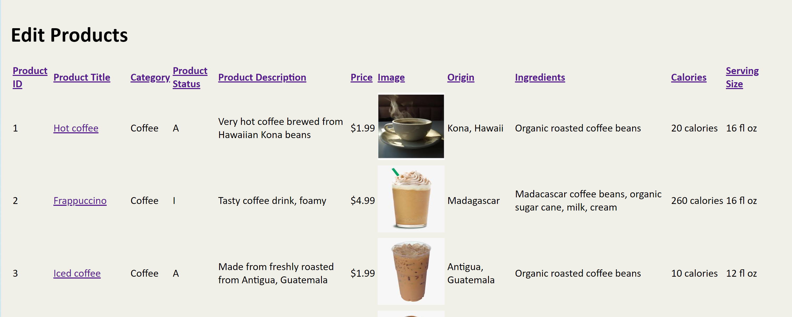

Week 12
This week, we launched into working with our groups for our coffee shop website project. It was a great experience and definitely had unique challenges along the way. I really enjoyed communicating with fellow team members about the design, layout, and programming of the website. One of the challenges we had was making sure we were all working with the same code and not overwriting other teammate's changes. We ended up coming up with a system where people would work on their files and communicate through Discord what they were working on. We also made sure to only upload files that we were specifically working on, rather than syncing the whole folder which would overwrite new changes that we could be unaware of.
At the start of the project, all the team members focused on different aspects of the website. I started with setting up the database and the tables in the database. The four tables included a table for users, products, categories, and orders. I also set up foreign keys between the products and categories tables, and foreign keys between the users, products, and orders tables. The products would have a category_id foreign key, while the category table would have category_id as the primary key. Meanwhile, the orders table would have user_id and product_id as foreign keys, while the user_id would be the primary key in the user table and the product_id would be the primary key in the product table.
After creating the tables, I wanted to create test pages to try to update the tables with information. This involved creating an user registration page to add users to the database. After this page worked, I tried to help with the login page to get to connected with the database correctly.
I also focused on working on the create-read-update-delete aspect of the products. This involved creating the add products page, view products page, and the edit products page. The edit products page currently contains the most information with all the current fields in the products database table displayed. This page has limited sorting capability when you click on the table headers. Also, the pages are numbered so that only 10 listings are shown per page and you can click on the numbered pages or on “Next” or “Previous” to go forward or backward. When you click on the name of a product such as “Hot Coffee”, you are taken to edit_single_product.php page which lets you edit nearly all the fields of the product. I decided to omit the image field and category type at the moment.
The edit products table could be improved by better CSS styling. I mainly focused on getting the PHP and mySQL queries to work correctly and to display the data in a table format. However, we could definitely improve the table styling and readability.
I worked on the add products page but it does not yet have all the newly added fields in the products table. I will try to add all the fields into the add products page such as uploading images and coffee ingredients and origin input fields.
I will also continue to work on the view products page. The page currently consists of a flex display with cards representing each product. I would like to add the product image to each card and to add more data displayed to each of those cards. Since upgrading the fields in the products database table, it is definitely possible to add product information such as the ingredients, calories, image, origin, and serving size to the view products page.
Lastly, I would also like to try to build out the categories create-read-update-delete pages. I think these can be patterned after the pages from the products.
Supplemental Learning
This week, I was trying to research how to style content where when the user scrolls down the page, the content changes opacity from 0 to 1 and transforms upward. I was not able to figure out definitively how to do this but it seems to involve JavaScript and trying to determine the window position and the div top and bottom location. So while that attempt to learn that content did not completely work out, I did end up learning about transforms.
Transforms are a really amazing property that move the location of an object. For example, when you hover over a button, you can set its transform to translateY(1em), which causes the button to move down 1em. Then, on the CSS of the original item, you set a transition with the value of transform, 500ms, which causes the transform to complete over half a second. Here is an example which works when you hover over the button.